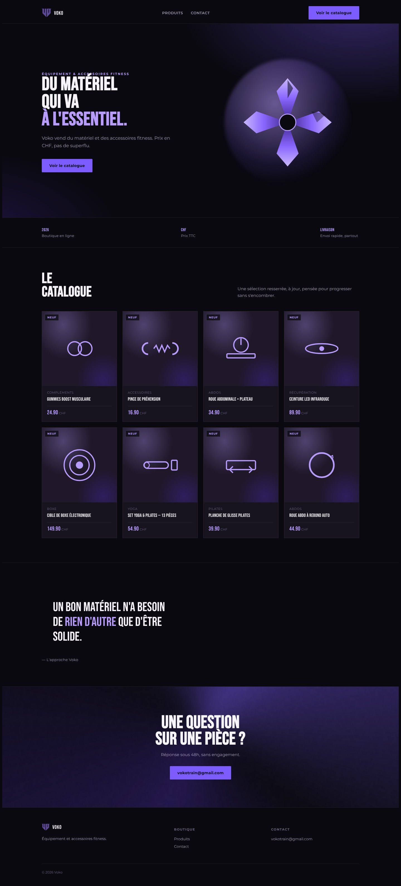

ContextThe idea
Voko is strength training gear to equip your home gym: dumbbells, benches, accessories. At first, the idea was also to buy, sell and trade in second-hand gear, with clear prices in Swiss francs.
I wanted to build a real brand, not just a page with products. So I started with the person the site is for.
ResearchFor whom and how
In the M291 workshop, I made a persona and a user flow. Julien, 26, a machinist, trains at home and wants reliable gear without paying the price of new. The user flow follows his purchase, from the homepage to the order confirmation.
IdentityLogo and colours
I first tested a V on its own, then drew a shield-shaped "VO" monogram in Illustrator, in solid, outline, grey gradient and purple versions.
Version 1Buy, sell and trade in
The first version of the site focused on second-hand: getting your gear valued, selling it or trading it in. Four pages, a more typographic identity with a spelled-out logo.
Final versionVoko Train
For the final version, I refocused the project on selling gear and accessories, with the new logo. The catalogue is ready as a Shopify import file, with product pages, prices and stock, and the legal pages are written.
TakeawaysWhat I learned
Doing the persona before the design changed everything. I knew who I was designing for, and it pushed me to simplify the site between the first and the last version.